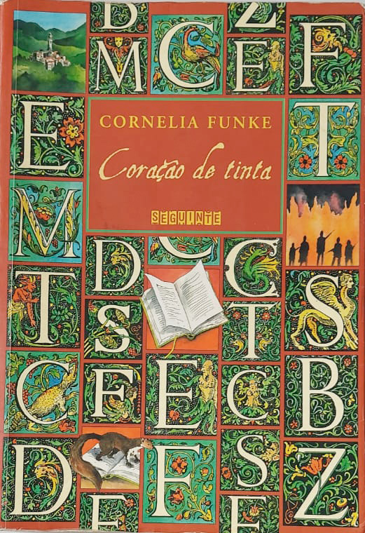

Coração de tinta - Cornelia Funke
Sobre o livro:
Há muito tempo Mo decidiu nunca mais ler um livro em voz alta. Sua filha Meggie é uma devoradora de histórias, mas apesar da insistência não consegue fazer com que o pai leia para ela na cama. Meggie jamais entendeu o motivo dessa recusa, até que um excêntrico visitante noturno finalmente vem revelar o segredo que explica a proibição. É que Mo tem uma habilidade estranha e incontrolável: quando lê um texto em voz alta, as palavras tomam vida em sua boca, e coisas e seres da história surgem como que por mágica. Numa noite fatídica, quando Meggie ainda era um bebê, a língua encantada de Mo trouxe à vida alguns personagens de um livro chamado Coração de tinta. Um deles é Capricórnio, vilão cruel e sem misericórdia, que não fez questão de voltar para dentro da história de onde tinha vindo e preferiu instalar-se numa aldeia abandonada. Desse lugar funesto, comanda uma gangue de brutamontes que espalham o terror pela região, praticando roubos e assassinatos. Capricórnio quer usar os poderes de Mo para trazer de Coração de tinta um ser ainda mais terrível e sanguinário que ele próprio. Quando seus capangas finalmente seqüestram Mo, Meggie terá de enfrentar essas criaturas bizarras e sofridas, vindas de um mundo completamente diferente do seu. Este e-book não contém as imagens presentes na edição impressa.
Imagens:
Onde Encontrar?
Estante 01, Prateleira 03, Seção F
Código do Livro
1979
Outras informações:
- Número de páginas: 455;
- Autor: Cornelia Funke(1958-);
- Editora: